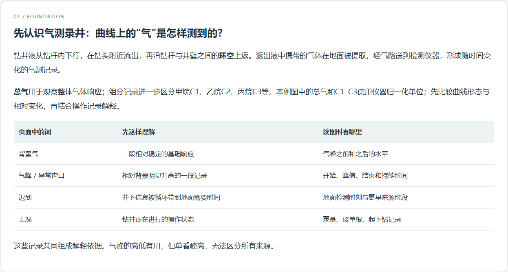
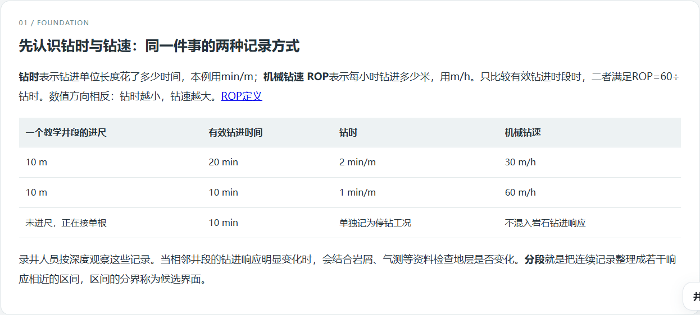
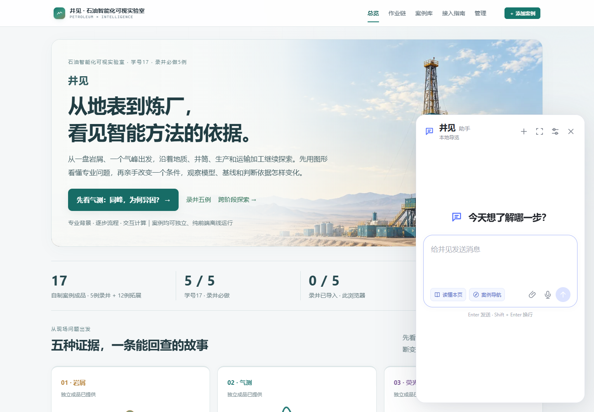

2026-10-24 · 1.7.0-preview · 学号17 · 17个自制案例
先把石油知识讲清，再用图解释方法
录井五例重新参照老师原样例的讲解顺序编写。右下角助手改为窄长小面板。其他12个阶段各1例已经构建并完成原站真实导入验收；老师原测井样例单独保留。
录井五例怎样重新讲解
每例按“先认识这项工作—当前做法与问题—AI能做什么—资料与学习任务”分四章。先定义工作对象，再解释为什么这样判读，用术语对照、手算例子和原文高亮帮助理解。原有场景图、循环动画和像素观察收进可展开的补充材料。每个流程步骤先说明目的与操作，再显示图解、输入和产物。
五例分别补齐岩屑与岩性、气测与迟到、白光与UV、钻时与机械钻速、报告中的观察与依据。正文桌面18px，390px阅读17px；表格在本区域横向滚动。增强门户对已保存的旧录井包也显示新讲解，包本身版本继续如实保留。

实际浏览器：气测第一章。复杂场景图默认收起，解释与概念关系成为阅读主线。
实际浏览器：用10m进尺的换算表解释钻时、ROP与停钻记录。
助手保持小尺寸，阅读字体放大
默认410×700，输入和回复18px，可选展开720px。提供新对话、附件菜单、录音入口和独立设置。增强门户各路由、17个独立案例与真实照片资料页均有入口；嵌入门户时只保留外层一个助手。此轮模型输入通路使用本地fixture验证文字、图片与音频，新增付费调用为0。

实际截图：缩小后的默认聊天面板与首页周围内容。没有四张大提问卡。
四组石油主题与十二例
通过内置imagegen绘制四幅主题，统一墨青、砂金与灰蓝；网站使用4张WebP，总548580字节。原始图、完整prompt、采油图局部修正及散列记录见主题图来源。主题图用于首页和案例分组，独立案例包不包含这些大图。
地质勘察与物探 · AI绘制本地主题钻井与井筒建造 · AI绘制本地主题生产、修井与增采 · AI绘制本地主题运输与加工 · AI绘制本地主题
原5例算法与数据15文件匹配上一提交；新增12例有实际训练、规则基线、独立评价、失败情景和人工历史。独立审阅结论保留模型弱于基线、空分母和延迟数据等检查；本页不把源码检查写成浏览器通过。
实际浏览器执行范围
上述会话共601项通过、0失败。检查包含同一案例的不同步骤，不能当作601个独立场景或教师评分。17个自制包加原样例实际保存2859158字符；浏览器读取到的manifest及运行文件散列与当前磁盘17/17匹配。原站opaque iframe的部分输入采用真实键盘Enter激活，未用脚本调用run或DOM click代替交互。
浏览器汇总 · 详细执行记录 · 实际下载文件核对。17份沙箱下载位于 output/exports/v1.7（气测JSON示例），下载后Node检查58项另计。
各专项存在重叠，保持分组呈现。源码/文件核对12项在 verification.json；该命令不启动浏览器。
发现的问题、修正和未完成验收
修正了新案例附加旧readability字体覆盖、原站head内联时助手访问空body、wo1默认小数与number步长不匹配。独立审阅还推动修正晚到化验、空集指标、人工历史与来源身份。旧失败和测试脚本状态别名误判都保留在本目录，最终报告只引用复验结果。
其他浏览器引擎、实体手机、真实麦克风与听感尚未验证；原生实时语音和视频入口未实现。Diana公开再分发许可仍待独立核验，因此完整包保持本地预览标记。剩余44候选场景没有扩展。原G5特定选集中的w5/pr2没有做，不能把T40/T41整项记为完成。